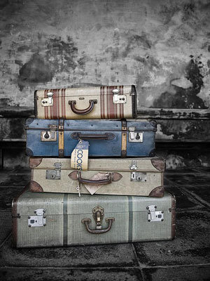
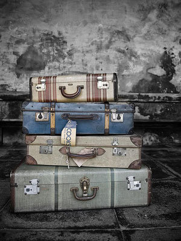

|
| Home The City Local Facts Travel Blogs Photo Gallery |
  
|
TravelItaly is a well-traversed country. Unlike less-trodden Croatia or Turkey, visitors from all over the world descend upon the boot in droves for an authentic taste of its homegrown specialties (olive oil! pesto!), Renaissance art, and gothic architecture. There’s a wealth of places to visit in Italy, from the ruins of Rome to the canals of Venice. There are also plenty of tours options, from Italy vacations based on Italian food to Amalfi Coast cruises, you’re sure to find one that makes you say “ciao” to the work week. Staying in the historic center of Firenze, will give you the possibility to visit most of Florence’s countless sights and treasures while enjoying its lovely atmosphere. At the same time, considering the central location of Florence in Tuscany, that’s also the ideal starting point to make a lot of day trips to some of Tuscany’s most beautiful destinations. Florence is well served by public transport; the main train station, Santa Maria Novella, as well as the bus companies leaving to reach nearby areas of Florence, have a central location in the town. The Autostazione – bus station of the SITA bus company, serving Chianti, Siena, Casentino area, and the Mugello, is adjacent the train station, in Via Santa Caterina da Siena.
Check out these links:37 Places You Need to Visit in Itlay8 Great Day Trips from FlorenceDelightful Day Trips from Florence |
Reference Links |